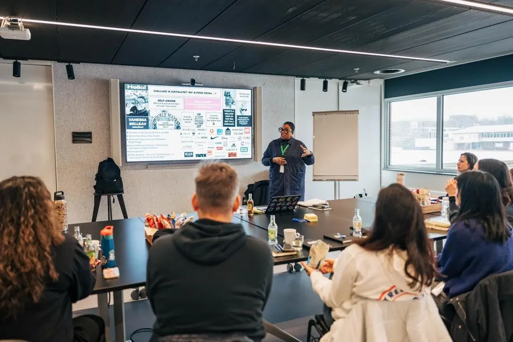
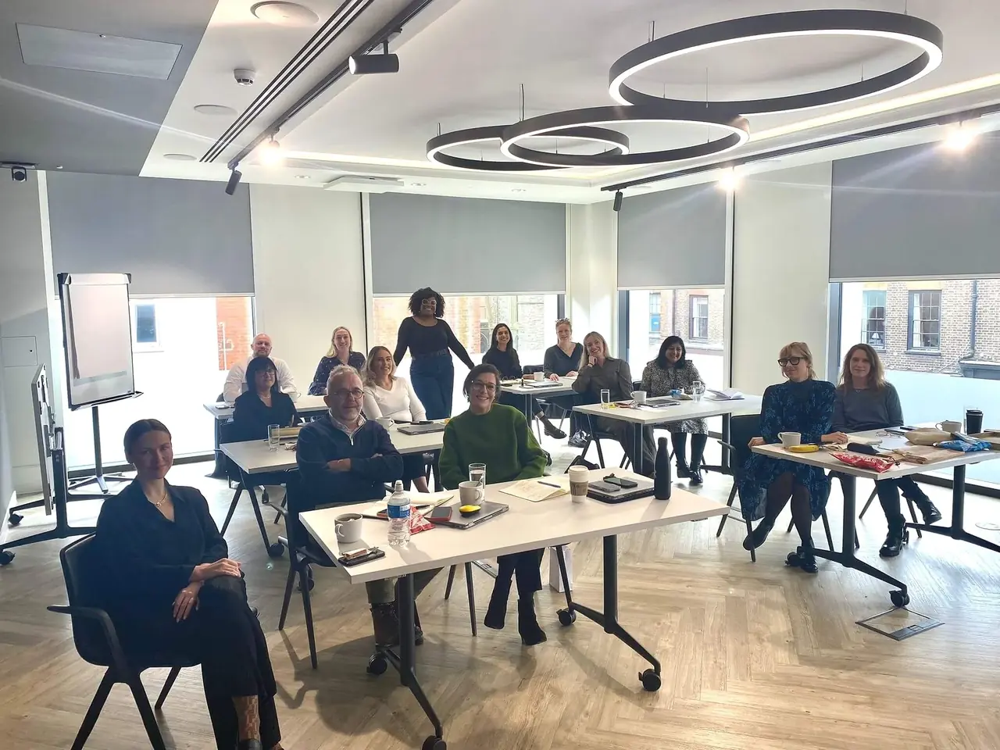
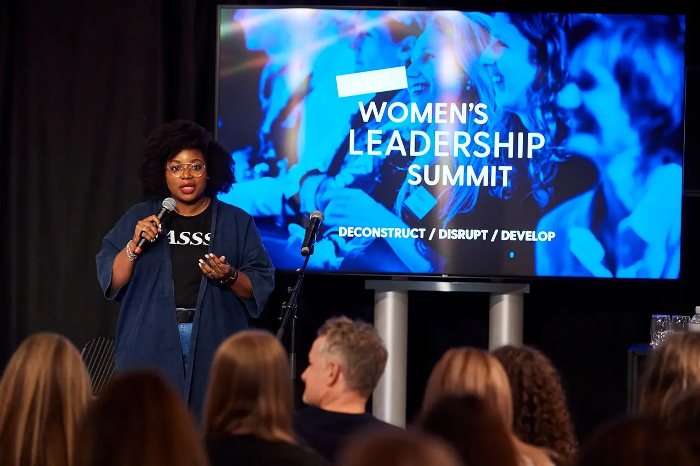
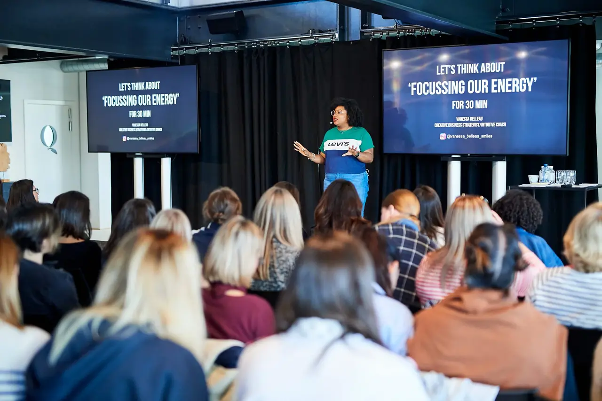
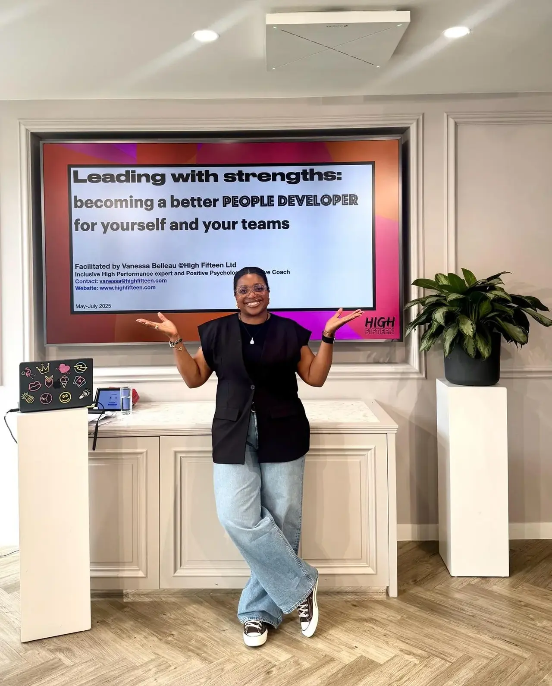
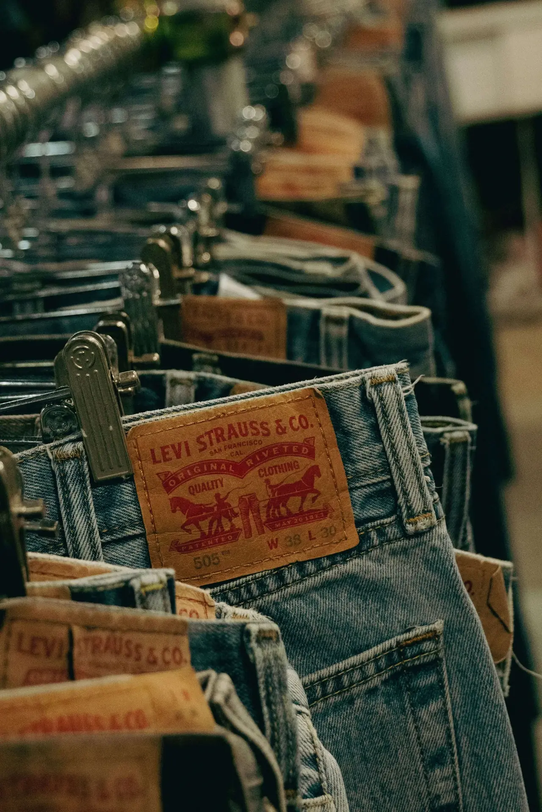
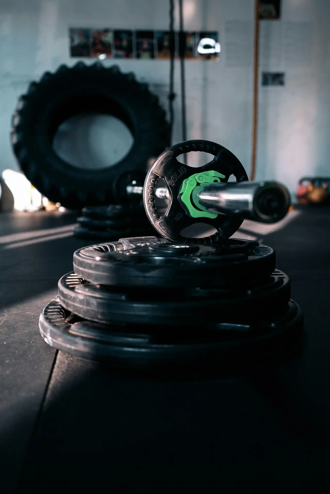
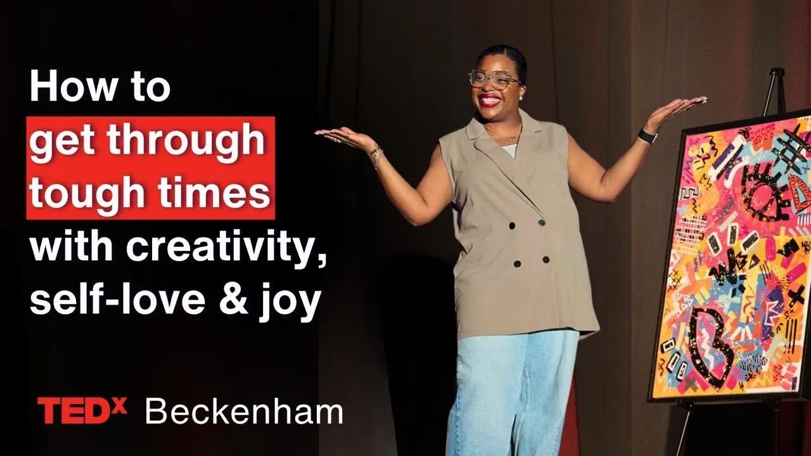

75%
of managers feel overwhelmed by growing responsibilities.
Source: GartnerExecutive coaching · Culture · Learning · Speaking
We help senior leaders, teams and HR partners build inclusive, high-performing cultures, so people make clear decisions under pressure without sacrificing trust, energy or inclusion.

Trusted by leaders at

What overwhelmed senior leaders call us in to fix
Most leadership problems aren’t skill problems. They’re pressure problems. Decisions stall. Energy drains. Conversations go underground. We name what others avoid, and build cultures where people perform and thrive.
The data does not lie
The gaps can be bridged by creating cultures where people feel seen, valued and empowered to innovate, share ideas and do their best work. Better engagement means better results. We do this every day.
of managers feel overwhelmed by growing responsibilities.
Source: Gartneris all. That’s the share of HR leaders who believe their programmes prepare leaders for future challenges.
Source: Gartnergreater profitability for organisations with highly engaged employees.
Source: GallupFind your way in
Pick the seat closest to yours and we’ll show you exactly how we help. No guesswork, no generic packages.



Our services
Delivered differently for organisations and individuals. Every engagement is tailored, never templated.
Compare all servicesDesign cultures that reduce friction, clarify accountability and support faster execution.
Targeted coaching for leaders who need clarity, confidence and presence in complex environments.

Leadership learning that changes behaviour, not just mindset, and never stays in the room.

Insight-led keynotes and facilitated sessions that reset focus, challenge assumptions and move people to action.
Our difference
‘Outstanding’, ‘inspirational’, ‘instrumental’, ‘incredible’. Our clients’ words, not ours. Yet, we agree. We strengthen leadership behaviour, emotional maturity and ways of working so everyone can execute with clarity, confidence and consistency.
We want you to feel
Deep listening, positive-psychology insight and a flexible approach that meets you where you are and takes you where you want to go.
World-renowned brands on the client list, and the same care and commitment for every relationship.
High performance is about accountability and sustainability. We design for teams that thrive tomorrow, not just today.
Micro business, scale-up, charity or global group: tailored solutions with integrity and long-term cultural impact.
Impact
Since 2019, across luxury, retail, FMCG, real estate, tech scale-ups and charities. Here is what clients consistently tell us after working together.
of leaders report increased confidence and clarity in their role.
participants rate our insights as immediately applicable to their day-to-day work.
of clients say we enabled more open, constructive conversations in their teams.
of clients come back to us for other projects, teams, functions or geographies.
Based on post-engagement feedback across coaching, workshops and leadership programmes.

Meet the founder
“No boxes, no barriers, no labels.”
High Fifteen was founded in 2019 by Vanessa Belleau, executive coach and culture consultant with over 18 years’ experience across leadership development, coaching and culture design.
She is known for naming what others avoid, creating psychological safety without lowering standards and helping leaders perform without self-sacrifice.
Client stories

A full cultural transformation that took 15 talented people from ‘storming’ to consistently ‘performing’.

A keynote that became a workshop series and two years as emcee of their gender equity summit.

Described by the Chief Brand Officer as a ‘guiding light’ in showing up for their people.
An inclusive high performance L&D programme, now three years and counting.
Nike, Mango, PUIG, MFK and more.
See all case studiesIn their words
They come when something important is at risk. Here’s what changed.
Vanessa has been and continues to be a key stakeholder in making our teams better teams inside out. A real fresh and inspirational approach. We always love having you by our side.
There’s a marked difference in the way the business has been operating before and after Vanessa’s influence. I feel more confident than ever to be the CEO that Better Nature needs and deserves.
I can honestly say that I wouldn’t be the leader I am today without her guidance. Working with Vanessa over the past 12 months has been nothing short of transformative.
Vanessa is energetic, fun, intelligent and a strategic coach who has added significant value to my leadership toolkit.
I had high hopes for the session and you exceeded those for sure. The content has definitely evoked something in the team. The journey really starts here.
If you have seen one of her famous presentations, you will never forget it your whole life, and you definitely want to see more from her.

Watch · TEDxBeckenham
How to get through tough times with creativity, self-love and joy. Vanessa’s TEDx talk on why choosing joy is a daily act of resilience, and the same energy she brings to every room.
The Pressure Check · 2 minutes
Six honest questions built on the patterns Vanessa sees in leaders every week. You get a score, a plain-English read on what is going on, and where we would start.
The Journal

We talk a lot about skills, motivation, accountability and productivity. Yet there is another question leaders and managers need to ask: how much of your authentic self do you feel able to bring to work every day?

At some point in your career, you are going to get something wrong. Welcome to being human. The question is not whether you will make mistakes. It’s what happens next.

By the time you get to the big moment, people already have a view of you, shaped by hundreds of tiny interactions you barely noticed.

Straight talk
We do our best work with people who are ready for honest challenge. Here is how to tell.